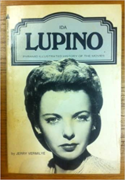

This brief book review is a contribution to the 2022 Classic Film Summer Reading Challenge,, run by Raquel Stecher of the Out of the Past blog.
In 1977, Jerry Vermilye published a small booklet about Ida Lupino's career as part of a series of such booklets, Pyramid Illustrated History of the Movies. It is a quick read, 140 or so pages, with plenty of pictures. The back cover suggests the book's aim is to cover "the life and career of this outstanding star". This is a worthy goal, but far too ambitious for this book.
A more appropriate title for this book would be The Films of Ida Lupino. A brief intro contains some interesting, insightful and respectful thoughts about Lupino's career, including expressing appropriate disbelief that her talents had never been acknowledged by the Motion Picture Academy with any nomination for an Oscar. Unfortunately, that flavor soon disappears in a parade of film descriptions and commentary about the films—much of which is not very insightful, often is unfairly dismissive, and sometimes contains inaccurate descriptions. There are also a few factual errors about Lupino's career, though, fortunately, such mistakes are limited in number.
One of the book's biggest deficiencies is that it downplays several critical aspects of Lupino’s career. For instance, it glosses over her unique position as the only woman director in Hollywood for a generation, plus how and why she accomplished becoming an independent producer-director-writer. It also spends very little time on Lupino’s television career in the 1950s, including her sitcom Mr. Adams and Eve. This period was probably the peak of her fame given the gigantic audiences for the TV networks at the time.
In short, I would not recommend this book for those seeking to learn more about Ida Lupino's life and career. As a biography of Lupino, it is completely lacking. As a summary of her films, it is marred by inaccurate and dismissive commentary about many of them. The book may be useful if you merely want a reference to her films or a rough outline of the timeline of her career. It does have a nice collection of photographs from Lupino's films.